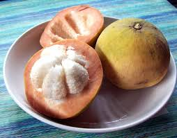
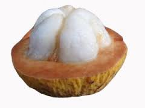

|  |
The leaflets of the Yellow, to 6 in (15 cm) long, turn yellow when old; the flowers are pinkish-yellow in panicles to 6 in (15 cm) long; the fruit has a thin rind and the pulp is 1/4 to 1/2 in (0.6-1.25 cm) thick around the seeds and typically sweet. The fruit may not fan when ripe. Only the Yellow is now found wild in Malayan forests. |
|  |
The leaflets of the Red, to 12 in (30 cm) long, velvety beneath, turn red when old; the flowers are greenish or ivory, in panicles to 12 in (30 cm) long; the fruit has a thick rind, frequently to 1/2 in (1.25 cm); there is less pulp around the seeds, and it is sour. The fruit falls when ripe. |